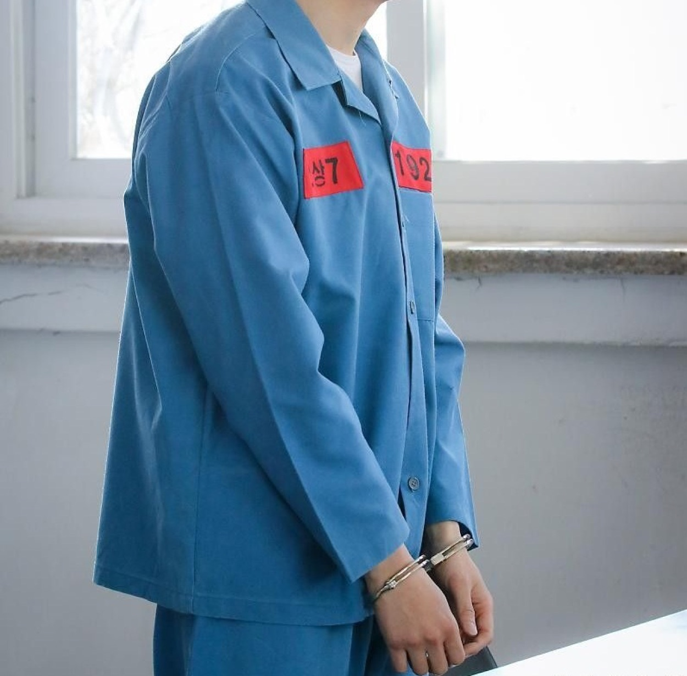

DJK-01
Chemise homme & femme
L'élégance alliée à la fonctionnalité
Conçue pour répondre aux exigences des établissements institutionnels, la chemise Djoko allie confort, résistance et présentation soignée. Son tissu et sa confection garantissent une bonne tenue dans le temps, même après de nombreux lavages.
| Tailles | XS à XXXL |
|---|---|
| Coloris | Blanc, bleu ciel, beige |
| Composition | 65 % polyester, 35 % coton |
| Caractéristiques | Col classique, une poche poitrine, manches courtes, boutons renforcés, coutures doubles |
| Prix unitaire | 8 500 FCFA |
